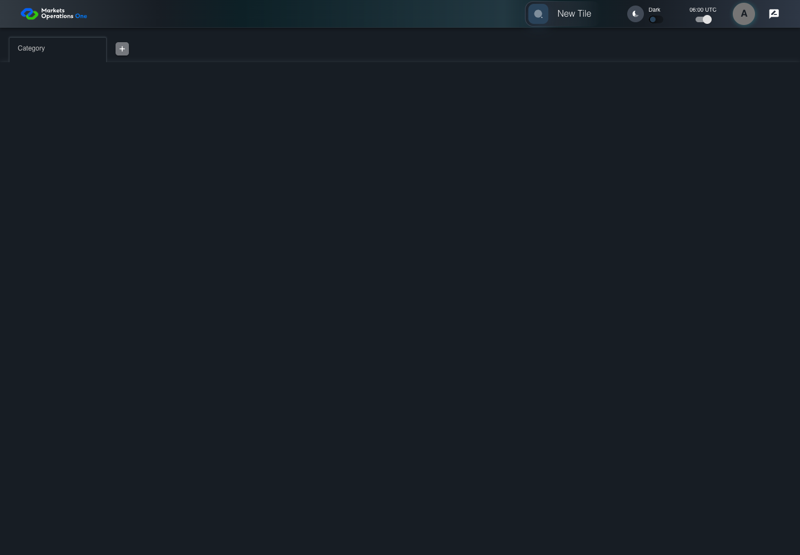
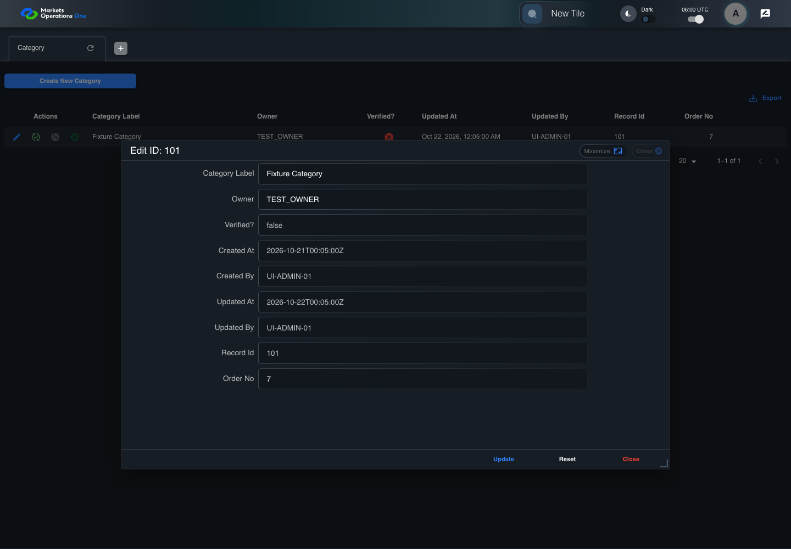

UI-ADM-FLD-004 actual administration UI with step evidence
PASS · application/run-050/ui-adm-fld-004-actual-administration-ui-with-step-evidence-32c304c04f24-attempt-1 · ACTUAL_APPLICATION_LOCAL_SERVICES
Actual current React administration screens. Controlled browser login supplies UI-ADMIN-01 and TEST_OWNER, or the declared SUPER_USER. Controlled BFF routes return the case-declared records. Other controlled saves persist submitted field values. This run establishes frontend handling only. It does not execute BFF validation, storage, audit generation, or authorization.
2026-10-22T06:00:26.624Z to 2026-10-22T06:00:30.316Z
Assertions and result · Artifact manifest · Exact run inputs and source hashes
Result SHA-256:7c11f2984109940429865b1c2ca0efaa69b4ffca1592d0c7d43edd3d870cc315Machine observations
- ui-origin-admin-requests.json
087c8139f509674dd0b6f27c4cdc0db7b9692be24755bd9a0c72fbf25e4f246c
Screenshot capture: CAPTURED. Named frames: 5.
Step screenshot bindings: COMPLETE. 4/4 canonical steps have execution screenshots.
Bindings measure structural coverage only. They do not establish screenshot content quality or relevance.
Screenshot content review: NOT_REVIEWED. Recorded context: 0/5 frames. Identical image bytes: 1 repeated frames. Recorded context does not establish human visual review.
Canonical step timeline
Given Admin A is authenticated as fixture UI-SUPER-01 with FMO PORTAL ADMIN role SUPER_USER
Execution: PASSED.
1. step-01 Visible state after step 1: Given Admin A is authenticated as fixture UI-SUPER-01 with FMO PORTAL ADMIN role SUPER_USER
2026-10-22T06:00:28.205Z · 1440×1000
Step: /Users/lushevol/code/github/ratan-release-impact/workbench/tasks/ui-test-coverage-20261022/test-cases.md:9197
SHA-256:bf52dbfb27bcf095ed9170244b9f6b666b27049d5885851d979b7f4a7d06d515And UI-SUPER-01 has FMO PORTAL ADMIN role SUPER_USER and record 101 is visible
Execution: PASSED.
2. step-02 Visible state after step 2: And UI-SUPER-01 has FMO PORTAL ADMIN role SUPER_USER and record 101 is visible
2026-10-22T06:00:29.083Z · 1440×1000
Step: /Users/lushevol/code/github/ratan-release-impact/workbench/tasks/ui-test-coverage-20261022/test-cases.md:9198
SHA-256:83763336fd023b3b0ba06ea1145e83a2ee1e0c106964ce566c7591a068da055cWhen Admin A clicks icon button named "Edit" inside row with Record Id "101" in the "Category" administration data grid
Execution: PASSED.3. step-03 Visible state after step 3: When Admin A clicks icon button named "Edit" inside row with Record Id "101" in the "Category" administration data grid
2026-10-22T06:00:29.333Z · 1440×1000
Step: /Users/lushevol/code/github/ratan-release-impact/workbench/tasks/ui-test-coverage-20261022/test-cases.md:9199
SHA-256:13929c37453978200f426be906daaf2147878e322a0cd26cdc09a796929903c6Then textbox named "Owner" inside the dialog named "edit ID: 101" inside the "Category" administration tabpanel is enabled
Execution: PASSED.
4. step-04 Visible state after step 4: Then textbox named "Owner" inside the dialog named "edit ID: 101" inside the "Category" administration tabpanel is enabled
2026-10-22T06:00:29.433Z · 1440×1000
Step: /Users/lushevol/code/github/ratan-release-impact/workbench/tasks/ui-test-coverage-20261022/test-cases.md:9200
SHA-256:59633ba022d928a518f9ab2ac342d44ff5abdf0134981ab36b80f730b3769083
Additional named frames

The final visible state after the named test assertions.
2026-10-22T06:00:29.658Z · 1440×1000Step: Test source: /Users/lushevol/code/github/ratan-release-impact/workbench/e2e/audit-specs/admin-expanded.spec.ts:15
SHA-256:
59633ba022d928a518f9ab2ac342d44ff5abdf0134981ab36b80f730b3769083Image bytes match frame 4. An unchanged image can be valid for consecutive assertions. This match does not establish correct step content.
Screenshots establish visible state only. Assertions and traces support functional claims.